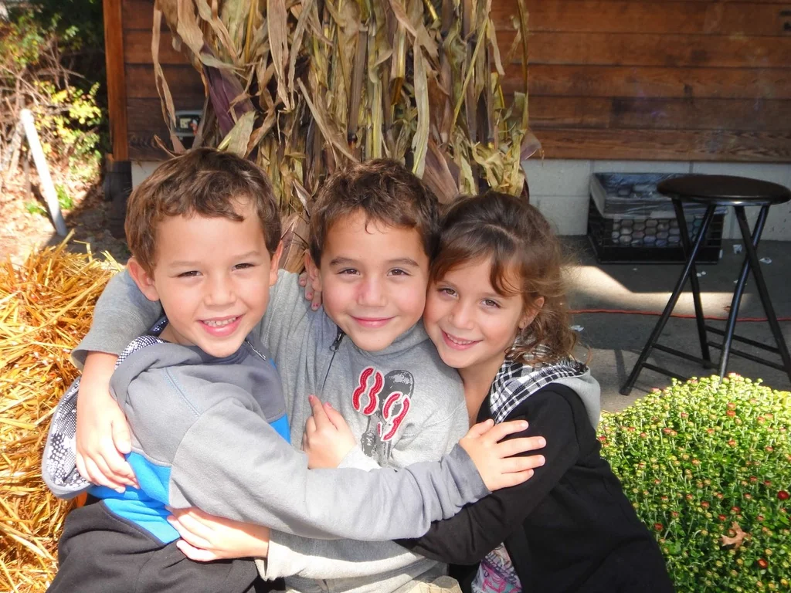
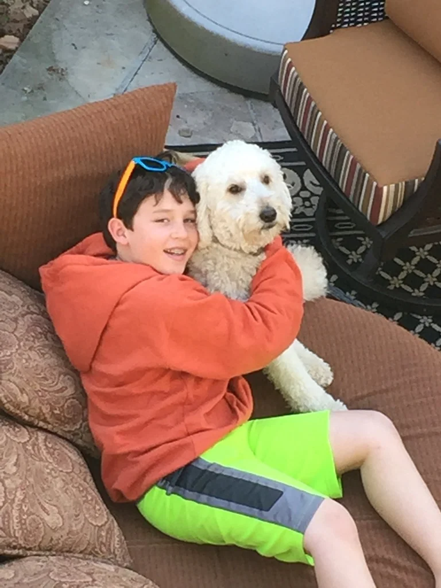
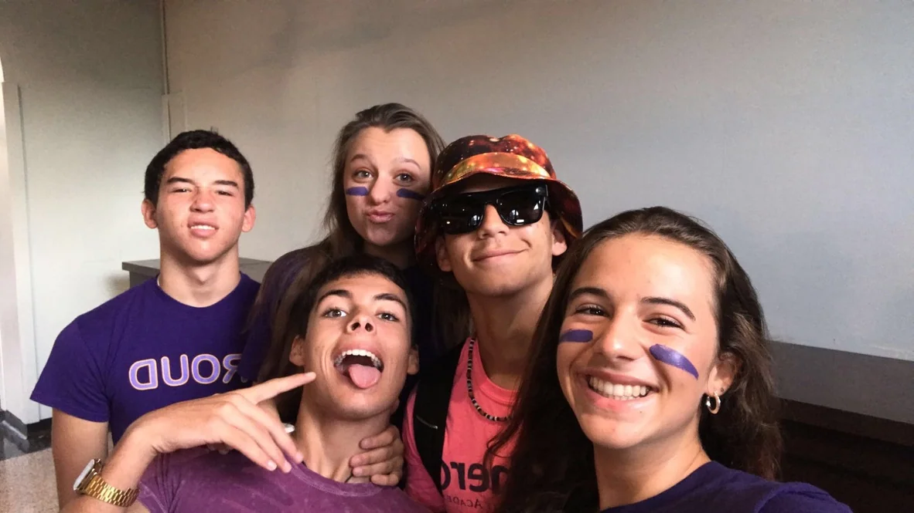

The boy behind the mission
Meet Scotty. Remember the joy.
A brother, son, friend, poet, Scout, athlete, and adventurer. There was never just one way to describe Scotty.


A life full of color
The person, not just the loss.
Scotty loved bright orange, green, and blue. He loved an adventure, a challenge, and a good laugh. He was part of a set of triplets, a devoted family member, a friend, a writer, and someone who dreamed of doing big things.
From Scouts and wrestling to exploring the world, Scotty packed energy and curiosity into the things he loved. He also wrote poetry — words that reveal his perspective in a way no one else could.
Scotty died by suicide at age 16. His death is part of our story, but it is not the whole story of his life. Spirit of Scotty exists to celebrate who he was and to turn enduring love into compassionate action.
So many sides
A few of our favorite moments
Each photograph is an original family image — Scotty, just as we remember him.






His voice continues
One of the ways we stay close to Scotty is through his words.
Poetry gave Scotty a way to share feelings, ideas, humor, and dreams. Those words remain part of his legacy.
Discover Scotty's poems →